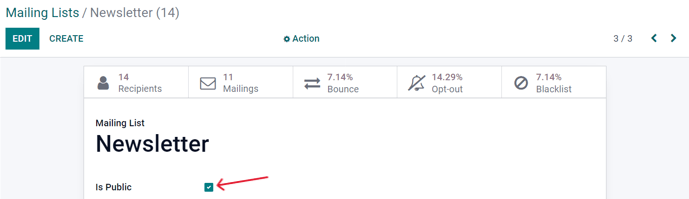

Mailing lists and blacklists¶
Creating or importing mailing lists in Odoo is very useful when curating content to specific groups of people that already share similar demographics or interests. Mailing lists are also a great way to get started if a company is migrating from another system, and already has a established audience.
Moreover, providing an audience with the option to ‘unsubscribe’ from mailings, helps businesses maintain good customer relations, by giving recipients the power to control what they are (and aren’t) sent.
Mailing lists¶
In the SMS Marketing app, there’s an option on the header menu called Mailing Lists. When clicked, a sub-menu is revealed with options for Mailing Lists and Mailing List Contacts.
Click to see an overview of all mailing lists in the database.

To edit any existing list, select the desired list from the Mailing Lists page, and proceed to modify it in a number of ways.
To create a new mailing list, click Create in the upper left corner of the Mailing Lists page. Doing so, will reveal a blank mailing list template form.

First, choose a name for the Mailing List, and activate the option Is Public, to make the mailing list accessible to recipients on the Subscription Management page. Doing so allows users to update their subscription preferences at any time.
Note
Checking the Is Public box is not required, but is recommended to maintain good customer relations.
When those fields are filled in, click Create to finalize the form. Then on the main Mailing Lists dashboard, the new mailing list that was just created will be accessible.
To edit or customize the mailing list further, select the mailing list from the main Mailing Lists page to reveal the mailing list detail form.
Along the top of the mailing list detail form, there are various analytical smart buttons displaying statistics for different metrics related to the mailing list (e.g. Recipients, Mailings, etc.).
To review or edit any of those elements, click the desired smart button to reveal a separate page with in-depth data associated with the mailing list.
To make changes to the mailing list itself, click the Edit button in the upper-left corner of the mailing list detail form.
Note
Don’t forget to hit the Save button once changes have been made.
Mailing lists contacts¶
Access contacts information from one or more mailing lists navigate to to reveal a dashboard with with all the contacts associated with one or more of the configured mailing lists in the database.
Note
By default, Odoo reveals the Mailing List Contacts page with the Exclude Blacklisted Phone filter in the search bar. Therefore only showing contact information for recipients who still want to receive communications and mailings.
Communication history in the Chatter¶
An accessible record of every sent mailing(s) is kept on each recipient’s chatter section, located beneath a recipient’s contact form (in the Contacts application).
Database users can reference the chatter to easily keep track of communications, and see a history of interactions with contacts and prospects.
For example, sales representatives can use the chatter to quickly find out which SMS mailing promotions a certain customer has received (or not received).

Blacklist¶
Odoo SMS Marketing has a Blacklist feature that provides recipients with the power to add their phone number to a list of people who no longer want to receieve communications or mailings.
This is also known as the unsubscribe process: customers will automatically be added onto a blacklist, if they click Unsubscribe, via their Subscription Management page. Customers can also be added manually to the blacklist, if necessary.
To see a complete collection of blacklisted numbers, navigate to the to reveal a dashboard containing every blacklisted phone number in the database.

To manually add a number to a blacklist, click the Create button in the upper-left corner of the dashboard and enter the phone number on the next page’s form. There’s also a checkbox to indicate whether that particular phone numnber is Active (or not).

Once the form is completed, click Save to add it to the Blacklisted Phone Numbers list. To remove any number from the blacklist, select the desired number on the dashboard, and then, on the phone number’s form, click Unblacklist.
Importing blacklists¶
During a software/platform migration, it is possible to import an already existing blacklist of contacts. This would include customers, who have already asked to be blacklisted` on SMS mailings.
To do that, navigate to , and then select the Favorites drop-down menu (beneath the search bar), and click Import records.